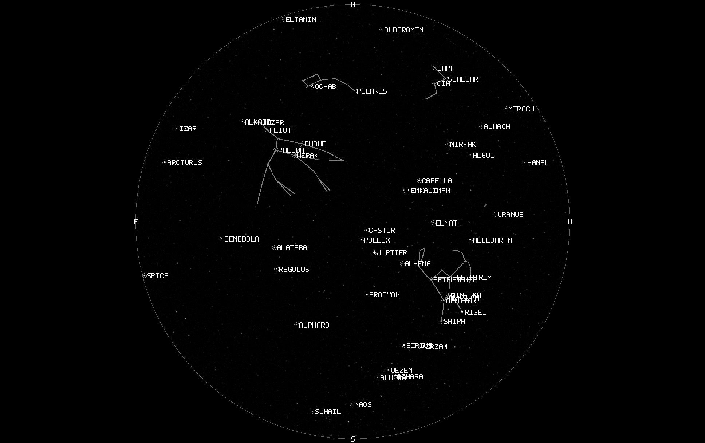

Representative capture / 31 Aug 20:13:55 MST / 1 Sep 03:13:55 UTCClear northern sky around the confirmed fireballNight capture in progressThree derivatives are accumulating; daily summary awaits rollover
- Scheduled window
- 19:08 - 05:08 MST
- Capture coverage
- 6m elapsed
- Usable captures
- 31 / 37
- Current cloud
- 8%
- Total integration
- 3m 05s
- Detected events
- 1 confirmed
Night timeline
Schedule, captures, weather, generated products, and events share one local time axis.
CapturesClear/usableCloudier interval
Daily derivatives
Generated products
31 August Fireball
Confirmed event at 31 Aug 20:13:55 MST / 1 Sep 03:13:55 UTC.

Meteor / fireball0.94 confidence / 2.14 secondsCentered five-frame evidence completeOpen scientific event
Scheduled automations
Typed tasks associated with this open observing day.
- Hourly Sky Motion TimelapseWorking segment / 37 source frames
- Nightly Star TrailFinal generation after window close
- Nightly KeogramFinal generation after window close
- Observing Day SummaryCommit provisional counters at rollover